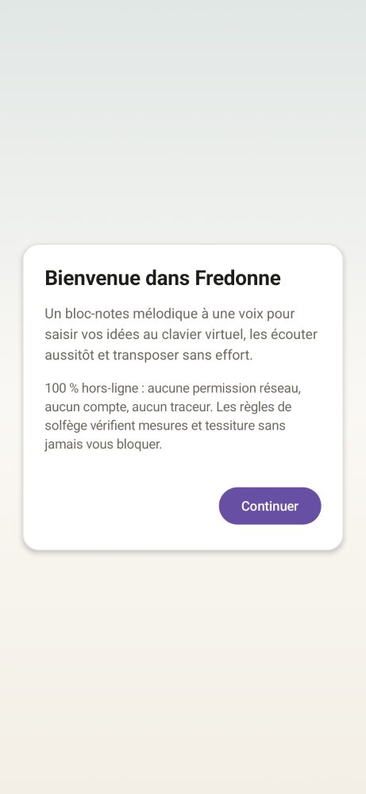
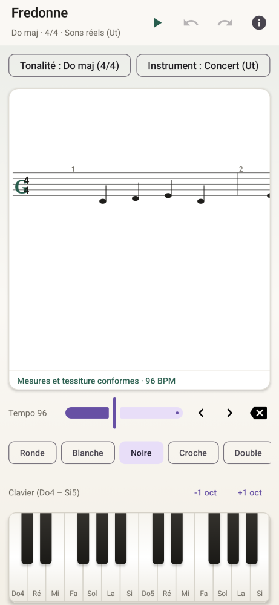
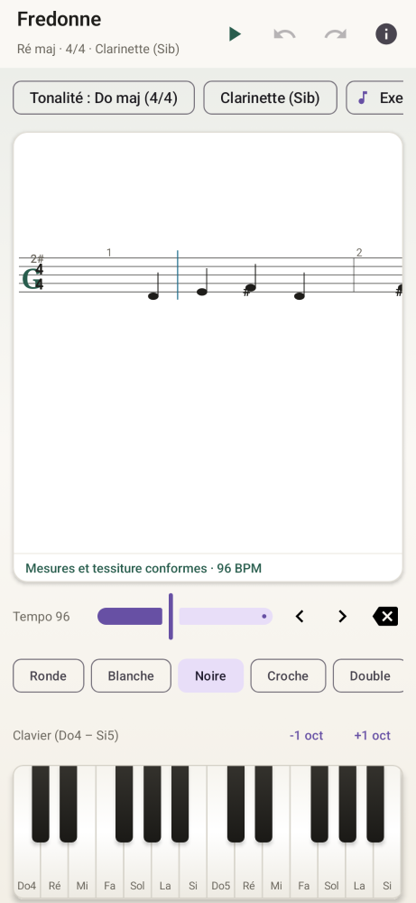

Saisie au clavier & curseur
Une rangée de durées à portée de pouce et un mini clavier de piano : chaque appui ajoute la note au curseur et la joue immédiatement.
Notation mélodique · Libre & hors-ligne
Fredonne est une application Android libre pour noter une mélodie à une voix au clavier, l'écouter tout de suite et la transposer dans une autre tonalité ou pour un instrument transpositeur (Si♭, Mi♭, Fa). Tout reste sur votre téléphone.
Sans viser de minuscules lignes de portée avec le doigt, sans abonnement et sans filigrane.
Une rangée de durées à portée de pouce et un mini clavier de piano : chaque appui ajoute la note au curseur et la joue immédiatement.
Changement de tonalité ou affichage adapté aux instruments transpositeurs (Si♭, Mi♭, Fa) avec orthographe juste des altérations.
Contrôle les durées de chaque mesure et la tessiture de l'instrument en toile de fond : il souligne sans jamais bloquer.
Import et export MusicXML, MIDI et PDF sans filigrane, via le sélecteur de fichiers Android.
Captures générées directement depuis l'interface Android.



Projetez-vous dans l'interface mobile de Fredonne : choisissez un instrument (timbre acoustique et transposition), la durée rythmique, tapez des notes sur le clavier et écoutez le rendu synthétisé à 44,1 kHz.
Pour offrir un rendu sonore naturel, une gravure lisible et une vérification théorique rigoureuse sans aucune bibliothèque propriétaire ni banque d'échantillons lourde, le moteur de Fredonne s'appuie sur la littérature scientifique en acoustique musicale et en musicologie computationnelle.
Plutôt qu'un oscillateur sinusoïdal sec, chaque note est synthétisée à 44,1 kHz selon la famille acoustique de l'instrument choisi (claviers feutrés à double corde désaccordée de +0,12 %, flûte à colonne d'air ouverte, tuyau à anche à harmoniques impairs 1, 3, 5, cuivres à ouverture spectrale dynamique, cordes). La raideur des cordes suit la loi de dispersion partielle fn = n f0 √(1 + B n2), pondérée par les courbes d'isosonie ISO 226:2023 et diffusée par un réverbérateur de Schroeder–Moorer (4 filtres en peigne passe-bas parallèles et 2 diffuseurs passe-tout en série).
Réf. : M. R. Schroeder (1962), « Natural Sounding Artificial Reverberation », JAES ; J. A. Moorer (1979), « About This Reverberation Business », Computer Music Journal ; H. Fletcher (1964), « Normal Vibration Frequencies of a Stiff Piano String », JASA ; J. O. Smith (2010), Physical Audio Signal Processing (CCRMA, Stanford).
Un clavier MIDI ignore la différence orthographique entre un Fa♯ et un Sol♭. Fredonne résout automatiquement l'enharmonie selon l'armure active et la direction mélodique locale en s'inspirant de l'algorithme PS13 de David Meredith, simplifie automatiquement les tonalités théoriques dépassant 6 altérations après transposition instrumentale, et estime la tonalité par corrélation de Pearson sur les profils cognitifs de Krumhansl & Schmuckler.
Réf. : D. Meredith (2006), « The PS13 Pitch Spelling Algorithm », Journal of New Music Research, 35(2) ; C. L. Krumhansl (1990), Cognitive Foundations of Musical Pitch, Oxford University Press ; D. Temperley (2001), The Cognition of Basic Musical Structures, MIT Press.
En gravure typographique, une ronde n'occupe pas quatre fois la largeur horizontale d'une noire, et quatre doubles-croches ne s'écrasent pas dans l'espace d'un seul temps. La portée interactive applique le modèle d'espacement optique non linéaire de John S. Gourlay (w(d) = wnoire · [1 + k log2(d / dnoire)]) ainsi que les règles de direction de hampes d'Elaine Gould.
Réf. : J. S. Gourlay (1987), « Spacing a Line of Music », Tech. Report OSU-CISRC-10/87-TR35, Ohio State University ; D. Byrd (1984), Music Notation by Computer, Indiana University ; E. Gould (2011), Behind Bars: The Definitive Guide to Music Notation, Faber Music.
Outre le contrôle des durées de mesure et de la tessiture réelle de chaque instrument, le moteur théorique intègre un vérificateur polyphonique détectant les quintes et octaves parallèles par mouvement semblable, les croisements de voix (formalisés géométriquement par Dmitri Tymoczko à la suite du Gradus ad Parnassum de Fux) et la rugosité sensorielle en bande critique de Plomp, Levelt & Sethares.
Réf. : R. Plomp & W. J. M. Levelt (1965), « Tonal Consonance and Critical Bandwidth », JASA, 38(4) ; W. A. Sethares (1993), « Local Consonance and the Relationship Between Timbre and Scale », JASA, 94(3) ; D. Tymoczko (2011), A Geometry of Music, Oxford University Press.
Des applications libres, gratuites et sans accès à Internet.
Accompagnement de l'insomnie par la TCC-I, agenda du sommeil en 20 s et écran de nuit sans horloge.
Suivi du cycle menstruel sans compte ni cloud, fiches médicales sourcées et bilan soignant.
Pause de respiration avant les applis à défilement infini et filtre Reels / Shorts.
Premiers secours anti-panique hors-ligne à la voix et par vibrations.
Calendrier de semis adapté aux gelées de votre département, associations et rotation au potager.